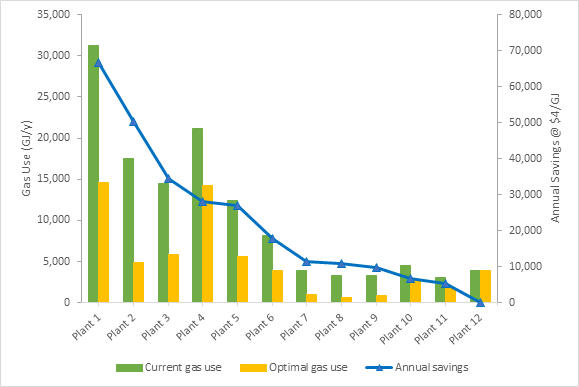
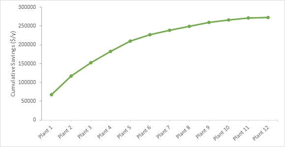

Process Ecology Inc. helps oil and gas facilities meet emissions regulations and adopt sustainable technologies. Process Ecology gathers data and measurements every year on more than 2,000 operating facilities and generates internal annual reports that highlight the year-to-year emission reductions. Their approach uses detailed engineering calculations, coupled with the regular sampling and analysis of gas compositions, to track and optimize the performance of oil and gas operating facilities
|  |  |
| Figure 1. Potential fuel gas savings identified at twelve dehydration plants. | Figure 2. Potential cumulative savings for twelve dehydration units. |
Process Ecology Inc.’s products provide oil and gas facilities with:
In response to growing methane emission regulations, Process Ecology created the Methane Emissions Advisor System (MeAdvisor). MeAdvisor tracks company-wide emissions of methane from continuous sources and non-routine events, and uses accurate engineering calculations to estimate methane volumes and emissions. Engineers can interpret the resulting data to optimize system designs and operating processes, which can result in the achievement of significant emission reductions. MeAdvisor uses facility-specific data to record methane emissions profiles for individual sources and identifies reduction opportunities. Their reporting technology can streamline emissions data for natural gas byproducts and greenhouse gases.
| Figure 3. MeAdvisor web-based software for managing methane emissions. |